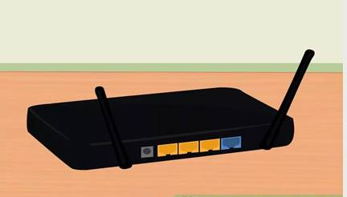
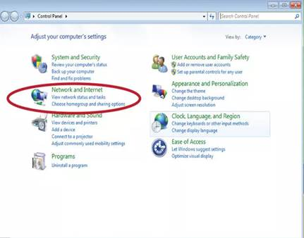
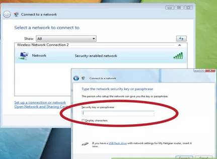
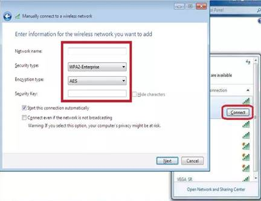

How to Configure a Laptop to a Wireless Router
1. 
First, you'll need to set up a
router. When you purchase your router, it is
usually straightforward. The instructions will explain all.
2. Open Control Panel in the Start Menu, and click network and internet.

3. Single click Connect to a Network. A list of networks should appear. Click on your network and connect.

4. Enter Information and Connect.
